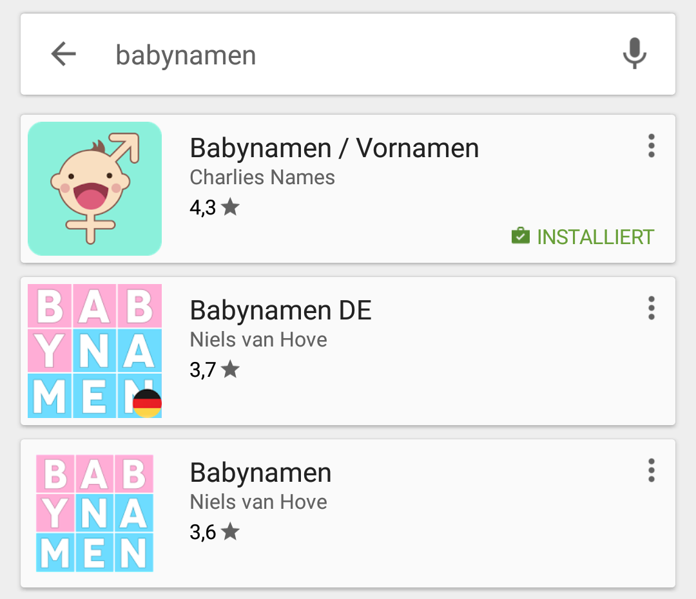

name: cover # App Strategie <br>Der Weg zur Nummer Eins Stephan Batteiger<br> Peerigon GmbH<br> <img id="slide-cover-img" src="assets/peerigon-logo.png" width="400"> --- layout: true class: theme-whiskey, slides-centered .slides-header[ Ziel ] --- class: slides-chapter count: false ## Ziel > Wir möchten erfolgreich mit unserer App sein. Wir möchten weit und breit die beste App anbieten. --- layout: true class: theme-whiskey, slides-centered .slides-header[ Agenda ] --- class: slides-chapter count: false ## Agenda --- .slides-content[ - Wie erreiche ich alle Smartphone-Nutzer? - Was zeichnet eine gute App aus? - Wie erreiche ich ein hohes Engagement der Nutzer? - Wie schaffe ich das nötige Wachstum? ] --- layout: true class: theme-whiskey, slides-centered .slides-header[ Wie erreiche ich alle Smartphone-Nutzer? ] --- class: slides-chapter count: false ## Wie erreiche ich alle Smartphone-Nutzer? <img src="assets/platform-logos.svg" width="500"> --- .slides-content[ ### Marktanteil Smartphones | Betriebsystem | Marktanteil | |:--------------|:--------------| | Android | 86,1 % | | iOS | 13,7 % | | Andere | 0,2 % | <br> <span class="slides-quote-ref"><a href="https://www.heise.de/newsticker/meldung/Smartphone-Markt-Windows-spielt-keine-Rolle-mehr-3722875.html">Smartphone-Markt: Windows spielt keine Rolle mehr, Heise, Mai 2017</a></span> ] --- .slides-content[ ### Mehr als nur eine App? - Smartphone - Tablet - Desktop - Smartwatch - Smart Home - Sprachassistent - Internet of Things - ... ] --- .slides-content[ ### Problem * Viele Entwickler ⇒ Hohe Kosten * Komplexität ⇒ Hohe Kosten * Unterschiedliche Software-Versionen ⇒ Hohe Kosten * ... ] --- .slides-content[ ### Lösung #### Client <img src="assets/client-css-html-js-cordova.png" style="height: 120px; margin: 0 auto;"> #### Server <img src="assets/nodejs-logo.svg" style="height: 80px; margin: 0 auto;"> ] --- layout: true class: theme-whiskey, slides-centered .slides-header[ Was zeichnet eine gute App aus? ] --- class: slides-chapter count: false ## Was zeichnet eine gute App aus? --- .slides-content[ ### #1 In den Appstores * Sichtbar in den Appstores (Top-Charts und Keywordsuche) * Benötigt wenige Berechtigungen * Gute Bewertungen und Nutzerrezensionen * Hohe Anzahl an Downloads? ] --- .slides-content[ ### #2 Sofortige Nutzbarkeit nach Download ... keine Registrierung oder umständliche Konfiguration ] --- .slides-content[ ### #3 Minimaler Funktionsumfang mit klarem Nutzen ] --- .slides-content[ ### #4 Auf die Wünsche der Nutzer angepasst * Feedback aktiv einholen * Bei schlechtem Feedback ⇒ Lösung finden ⇒ Bessere App ⇒ Wachstum * Bei gutem Feedback ⇒ Im Store bewerten lassen ⇒ Wachstum ] --- .slides-content[ ### #5 Für Menschen gemacht * Aus Daten täglich lernen, aber so wenige Daten wie möglich erheben! * Von Kindern und Jugendlichen lernen ] --- .slides-content[ ### #6 Gute User Experience * Ansprechendes Design * Gute Performance * Gute Usability * Gutes Wording * Bug-frei * Personalisiert * State of the Art ] --- .slides-content[ ### #7 Offlinefähig ] --- .slides-content[ ### #8 Hoher Wert der App Optimiert für den Nutzer und nicht für den Umsatz, dann sind die Leute auch bereit für eine App zu bezahlen! <img src="assets/app-umsatz.png" style="height: 300px; margin: 0 auto;"> <span class="slides-quote-ref"><a href="http://de.statista.com/statistik/daten/studie/173810/umfrage/umsatz-mit-mobilen-apps-in-deutschland-seit-2009/">Umsatz mit Smartphone- und Tablet Apps weltweit im Jahr 2010 und Prognose bis 2015 (in Milliarden US-Dollar), Statista, 2016</a></span> ] --- layout: true class: theme-whiskey, slides-centered .slides-header[ Wie erreiche ich ein hohes Engagement der Nutzer? ] --- class: slides-chapter count: false ## Wie erreiche ich ein hohes Engagement der Nutzer? --- .slides-content[ ### #1 Regelmäßig neue Inhalte anbieten ] --- .slides-content[ ### #2 App spielerisch gestalten - Belohnungen einbauen ] --- .slides-content[ ### #3 Karteileichen reaktivieren * Regelmäßiges Update * Push Benachrichtigungen * Local Notifications * ... ] --- .slides-content[ ### #4 Netzwerkeffekt herstellen * Freunde * Familie * Bekannte * Arbeitskollegen * ... ] --- .slides-content[ ### #5 Schnittstellen für Entwickler öffnen ] --- layout: true class: theme-whiskey, slides-centered .slides-header[ Wie schaffe ich das nötige Wachstum? ] --- class: slides-chapter count: false ## Wie schaffe ich das nötige Wachstum? --- .slides-content[ ### Wie werden Apps gefunden? 1. Browsen im App Store 2. Empfehlungen von Freunden und Familie 3. Browsing Top-Listen 4. Vorinstallation 5. Social Networks 6. Im Internet generell 7. Anzeige in Magazinen oder Zeitungen 8. Blogs <span class="slides-quote-ref"><a href="https://sprylab.com/de/blog/app-marketing" target="_blank">sprylab.com/de/blog/app-marketing</a></span> ] --- .slides-content[ ### #1 App Webseite ... mit Zusatzinformationen, wie Pressekit, Team-Infos und Download-Material. ] --- .slides-content[ ### #2 Pressearbeit ] --- .slides-content[ ### #3 App Store Optimierung (ASO) ] --- .slides-content[ ### #3 App Store Optimierung (ASO) #### Bekannte Kriterien für das Ranking * Gesamtanzahl Downloads * Downloadzahlen in letzter Zeit * Bewertungen * Anzahl Deinstallationen * Keywords * "Gib hierfür +1"-Button * ... ] <img style="right: 2rem; position: absolute; width: 20%; bottom: 10%;" src="assets/gib-hierfuer-1.png"> --- .slides-content[ ### #3 App Store Optimierung (ASO) #### Keyword-Strategie * Ggf. erst Nische, dann Masse * Wahl der Kategorie mit am wenigsten Konkurrenz ] --- .slides-content[ ### #3 App Store Optimierung (ASO) #### Suchtreffer - der erste Eindruck zählt * App Icon * Bewertung * App Titel * Entwickler ]  --- .slides-content[ ### #3 App Store Optimierung (ASO) #### Appstore-Eintrag - noch hat sich der Nutzer nicht entschieden * App Video * Screenshots mit Alleinstellungsmerkmalen und Kundennutzen * Beschreibung * Kommentare * "Gib hierfür +1"-Button * Localization (150 Länder, 40 Sprachen) ] --- .slides-content[ ### Tools? Das perfekte Tool gibt es (noch) nicht! * App Stats * Eingene Statistiken * Piwik * Google Play Console * Apple iTunes Connect * ... ] --- .slides-content[ ### #4 App bewerten lassen ... ... aber nur wenn die Nutzer gut bewerten werden! Uns interessieren in diesem Fall nur die 5 Sterne! ] --- .slides-content[ ### #5 Social Media Sharing * Facebook * Twitter * Google * Instagram * WhatsApp * Mail * ... ] --- .slides-content[ ### #6 Boost-Strategie - App-Downloads einkaufen ⇒ Kurzfristig, teuer, fürt zu Deinstallationen ] --- .slides-content[ ### #7 Traffic kaufen * Facebook * Twitter * Google * Tumblr * Tapjoy (Werbung in anderen Apps) * App Portale * Pinterest * ... ] <img style="right: 2rem; position: absolute; width: 250px; top: 10%;" src="assets/facebook-werbung.png"> --- .slides-content[ ### #8 Internationalisieren | Sprache | Mio. Sprecher | |:--------------|:--------------| | Englisch | 1.500 | | Chinesisch | 1.100 | | Hindi | 650 | | Spanisch | 420 | | Französisch | 370 | | Arabisch | 300 | | Russisch | 275 | | Portugiesisch | 235 | | Bengalisch | 233 | | Deutsch | 185 | | ... | ... | <span class="slides-quote-ref"><a href="http://m.weltsprachen.net/">m.weltsprachen.net</a></span> ] --- layout: true class: theme-whiskey, slides-centered .slides-header[ Wie komme ich auf Platz 1 mit meiner App? ] --- class: slides-chapter count: false ## Wie komme ich auf Platz 1 mit meiner App? --- .slides-content[ > ### Ganz einfach: Die App muss weit und breit die Beste sein! ] --- layout: true class: theme-whiskey, slides-centered .slides-header[ Danke! ] --- class: slides-chapter count: false ## Vielen Dank! Peerigon GmbH<br> Stephan Batteiger<br> mail: stephan.batteiger@peerigon.com<br> tel: +49 821 9078086-1